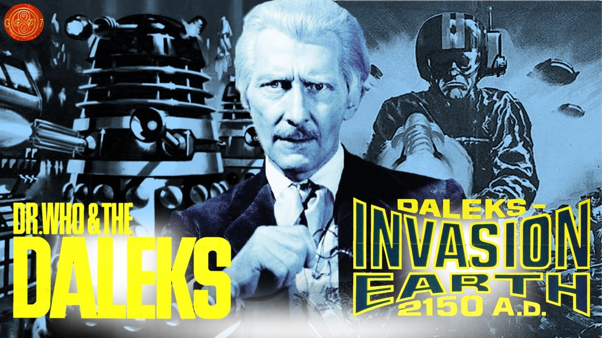
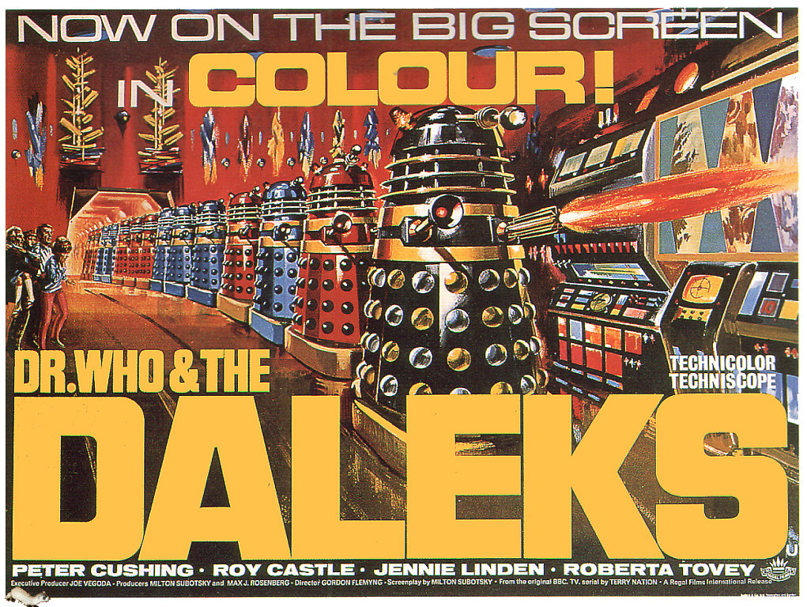
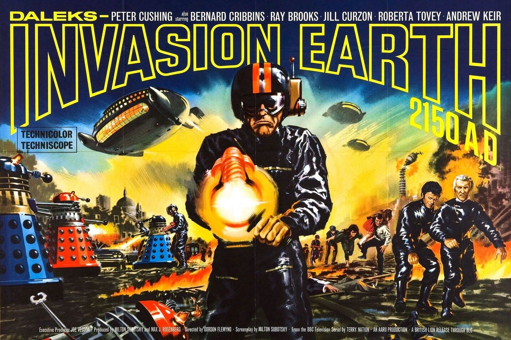

Dr. Who and the Daleks
Bastidores e Produção
“Dr. Who and the Daleks” foi uma pequena franquia de dois filmes produzida pela British Lion Films durante os anos 60 no auge da “Dalekmania”. Os filmes foram duas adaptações cinematográficas de arcos da série orignal, “The Daleks” (Os Daleks) e “The Dalek Invasion of Earth” (Os Daleks Invadem a Terra), ambos do 1° Doutor.
A canonização desses filmes foi planejada por Steven Moffat em 2013 no especial de 50 anos de Doctor Who, “The Day of the Doctor” (O Dia do Doutor), onde teríamos uma cena dentro do Arquivo Negro da UNIT, mostrando os pôsteres desses dois filmes, indicando que eles existem dentro do universo da série como “filmes baseados em histórias que pessoas comuns ouviram sobre um tal Doutor”. Porém, devido à problemas de direitos autorais com a produtora dos filmes, essa homenagem e canonização foi adiada para 2017, quando foi publicada a novelização desta história onde esse e outros detalhes sobre os filmes foram adicionados na trama.
Curiosidade: o ator Bernard Cribbins, que interpreta o personagem Tom no segundo filme, mais tarde voltou para Doctor Who interpretando o avô de Donna Noble, Wilfred!
Dr. Who no Brasil?
Os dois filmes Dalek foram a primeira coisa relacionada a Doctor Who a chegar no Brasil e podem ter sido exibidos na TV aberta várias vezes durante os anos 70. Porém, só temos confirmação de que o primeiro dos dois filmes – traduzido como “A Guerra dos Daleks” – foi transmitido no “Canal 7” de São Paulo no dia 15 de Dezembro de 1981, às 18h; e transmitido novamente no canal “Rede Manchete” no dia 1º de Abril de 1990, às 18:30 e reprisado em 15 de Julho de 1990 (imagens abaixo). O estúdio responsável pela dublagem teria sido lendário “Herbert Richers”, mas aparentemente essa dublagem se perdeu com o passar das décadas.
O filme também pode ter sido exibido legendado, o que era comum para a época, mas infelizmente não há resquícios de nenhuma dessas versões oficiais na Internet ou com colecionadores de antiguidades – e acredite, nossa equipe procurou MUITO, dentro e fora da internet. Se souber onde ou com quem encontrar, por favor nos envie um e-mail que faremos o possível para obter tais versões.
Mas não se preocupe, pois em 2017 a Dark Side lançou estes dois filmes em DVD em um box com vários brindes. Os DVDs são legendados e são as versões deste box que temos disponíveis aqui em nosso site.Dr. Who e os Daleks, transmitido em São Paulo em 1º de abril de 1990.
História
Aqui o Doutor é retratado um cientista humano de sobrenome “Who” (Dr. Who, ba dum tss), Susan e Barbara são suas netas e Ian é o namorado de Barbara. Já no segundo filme, Ian e Bárbara são substituídos pelos personagens Tom e Louise.
Dr.Who and the Daleks (1965)
ELENCO:
Dr. Who – Peter Cushing
Susan – Roberta Tovey
Barbara – Jennie Linden
Ian – Roy Castle
FICHA TÉCNICA:
Roteiro: Milton Subotsky (baseado no roteiro original de Terry Nation)
Direção: Gordon Flemyng
DownloadLegendado
Dr. Who and the Daleks Invasion of Earth: 2150 A.D. (1966)
Dr. Who – Peter Cushing
Louise – Jill Curzon
Tom – Bernard Cribbins
FICHA TÉCNICA:
Roteiro: Milton Subotsky (baseado no roteiro original de Terry Nation)
Direção: Gordon Flemyng
DownloadLegendado
Documentário sobre a produção dos filmes e uma homenagem aos atores Peter Cushing e Roy Castle. Recomendamos que o assista apenas após ver os dois filmes.
DownloadLegendado
Créditos dos links dos Videos, das imagens e Textos: Universo Who, Os Mestres de Luxor, Parceria Who e Senhor Secreto